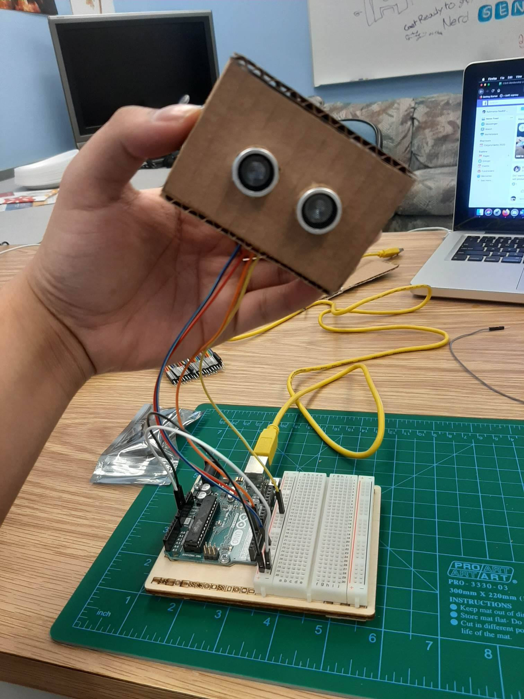
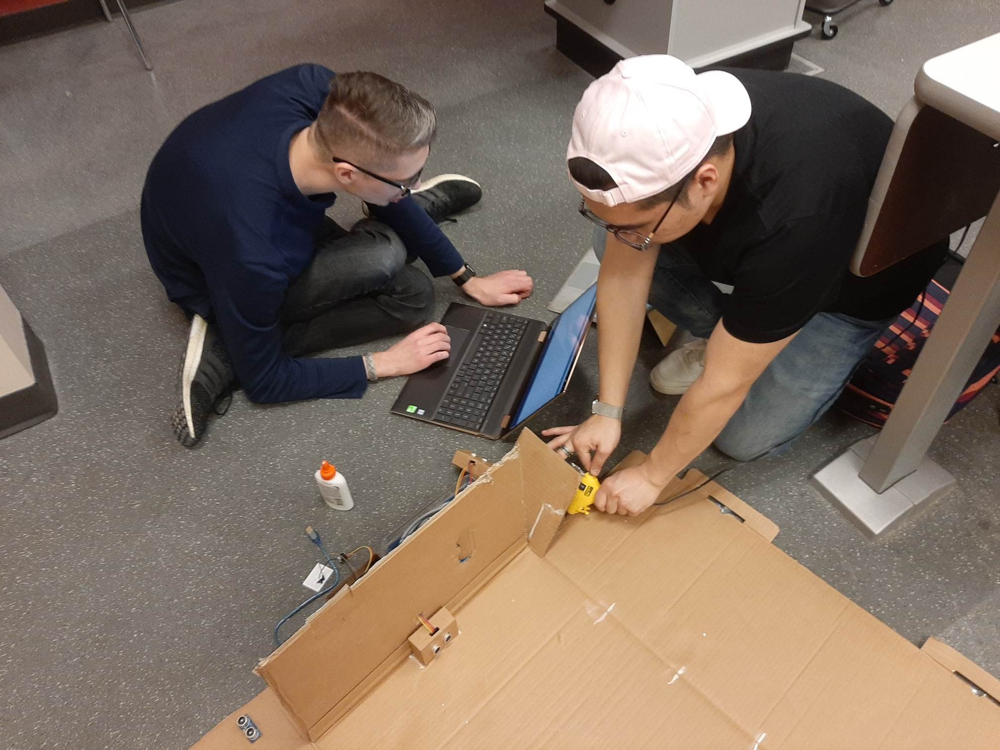
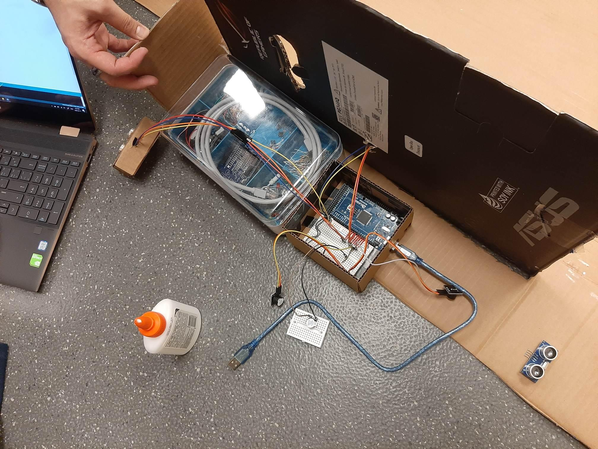
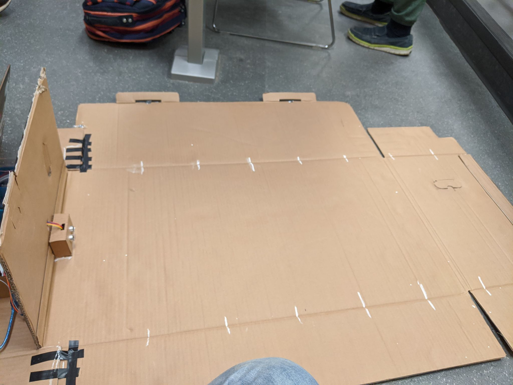
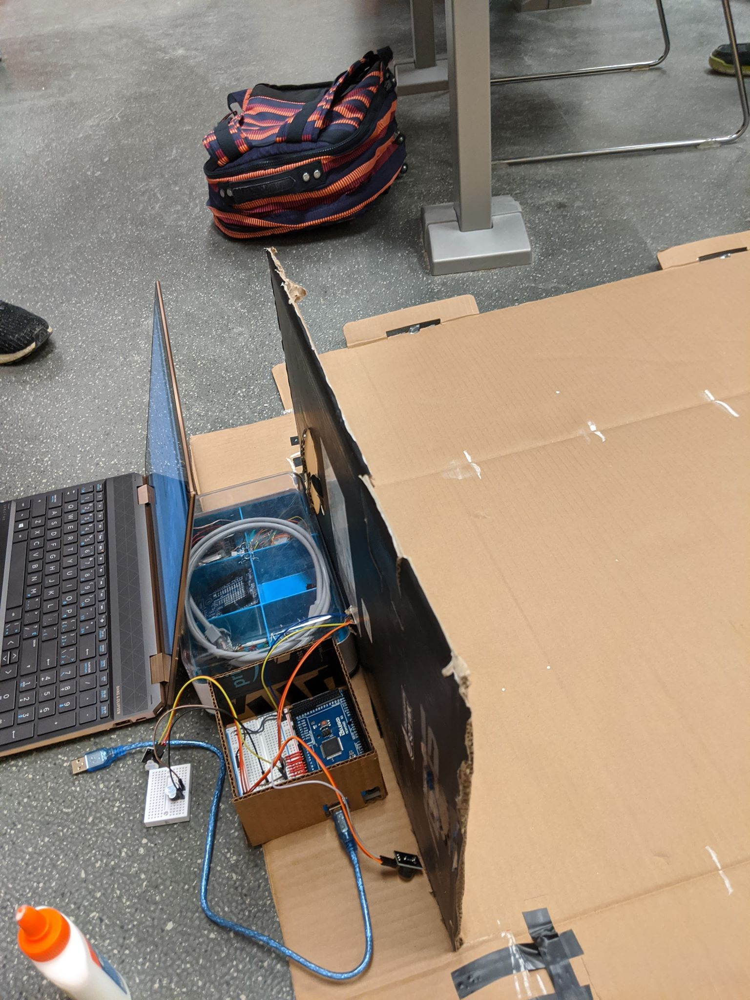
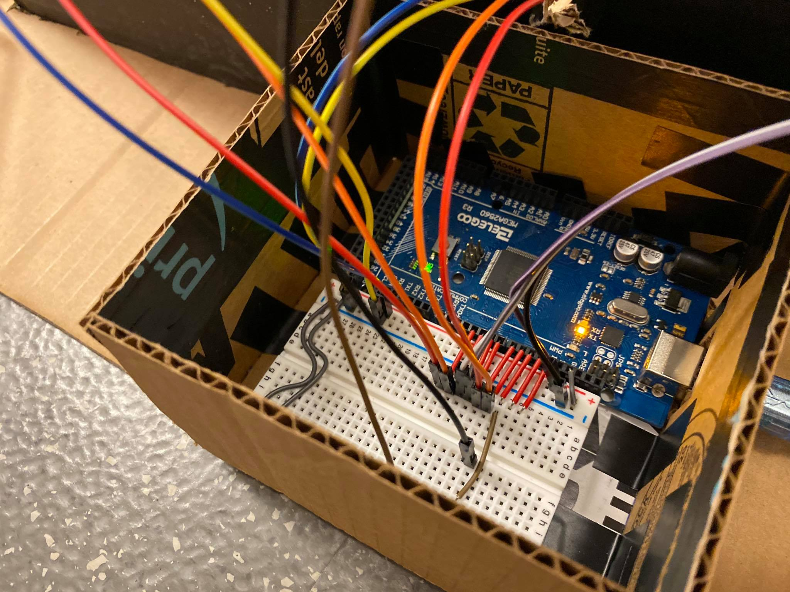
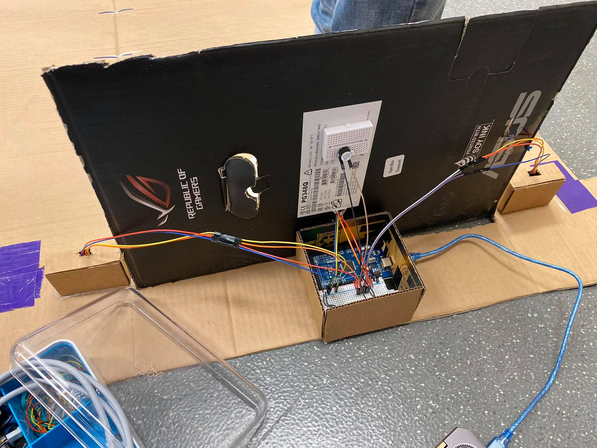
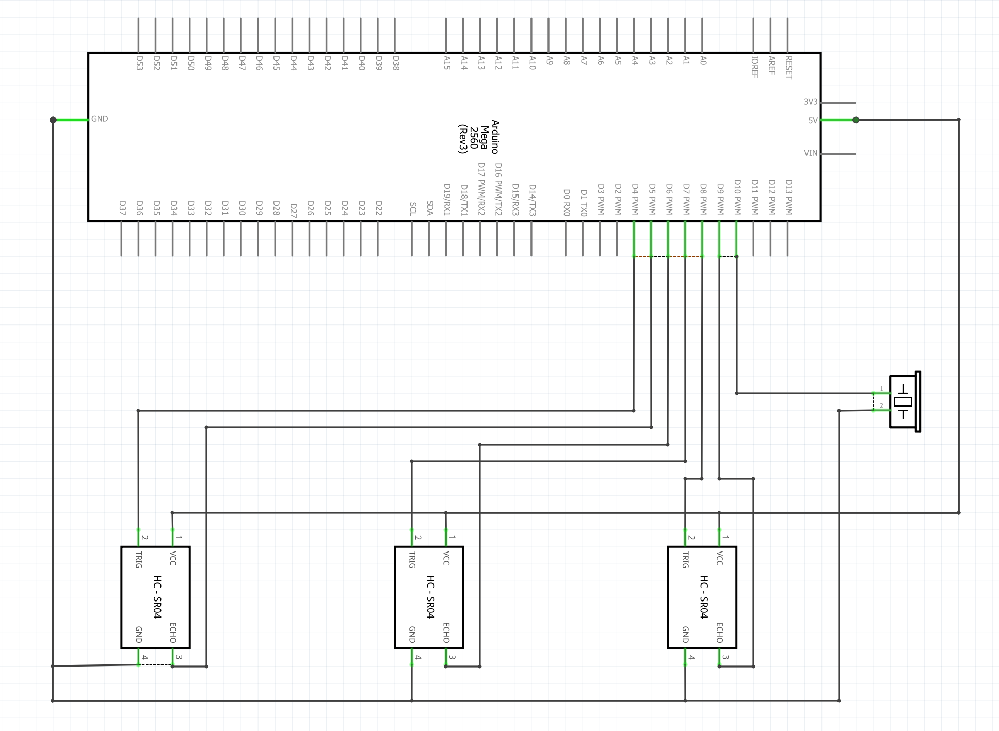
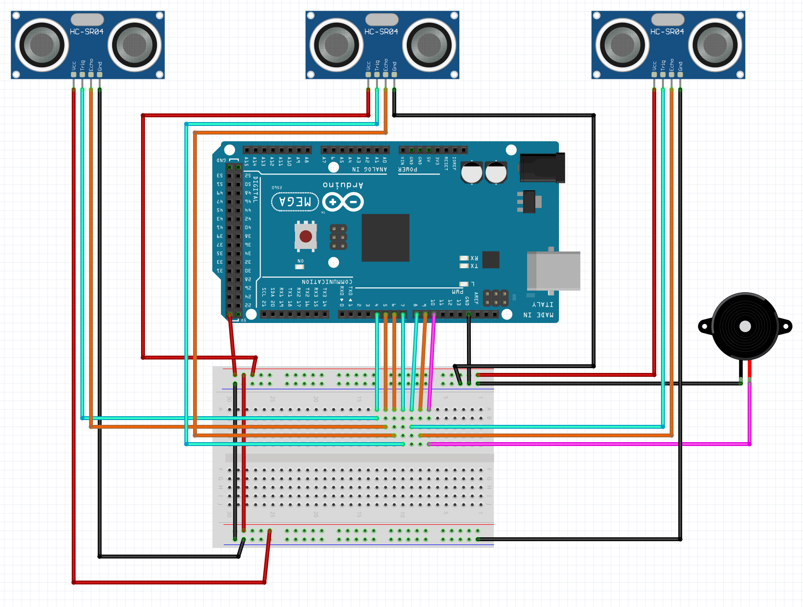

Davis Roman
PortfolioCPSC 599: Assignment 2
Summary:
Music, the concept of music and sound, has always been a somewhat ephemeral experience. Sound waves are invisible and for the most part, imperceivable beyond hearing. Additionally, the music experience has been divided into two facets: (1) Those who play music (2) Those who experience/interpret the music. Thus our aim with the Dance Dance Interactions instrument is to map a physical interaction - dance, with an ephemeral output - music. This allows the user to physically embody their music output - giving physicality to the music performance as well as add a visual element for the audience. The Dance Dance Interactions instrument is played effectively by dancing. A series of distance sensors are placed in parallel along a plane on which the performer will stand. The system is set up so that distance intervals (every 15 cm) mp to different notes. Starting from C3 all the way to C5 - 3 Octaves worth of the C major scale.
Photos:
Initial Development:
  Dance Board Development:
Dance Board Wiring (Single Sensor):
Dance Board Wiring:
 Video (Final Prototype):
Code:
To view the code for the above project, click here.
Circuit Schematic / Breadboard Schematic:
Circuit Schematic:
Breadboard Schematic:
To download the Fritzing file containing both schematics, click here.
References:
SunFounder:
Gary:
- https://pinshape.com/items/15344-3d-printed-wip-tiny-articulated-bot